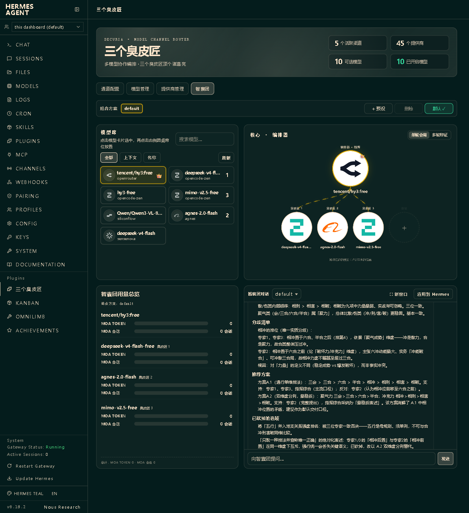
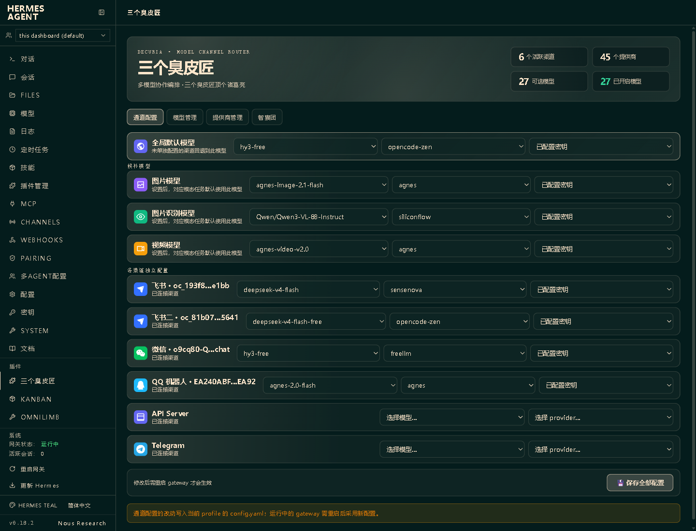
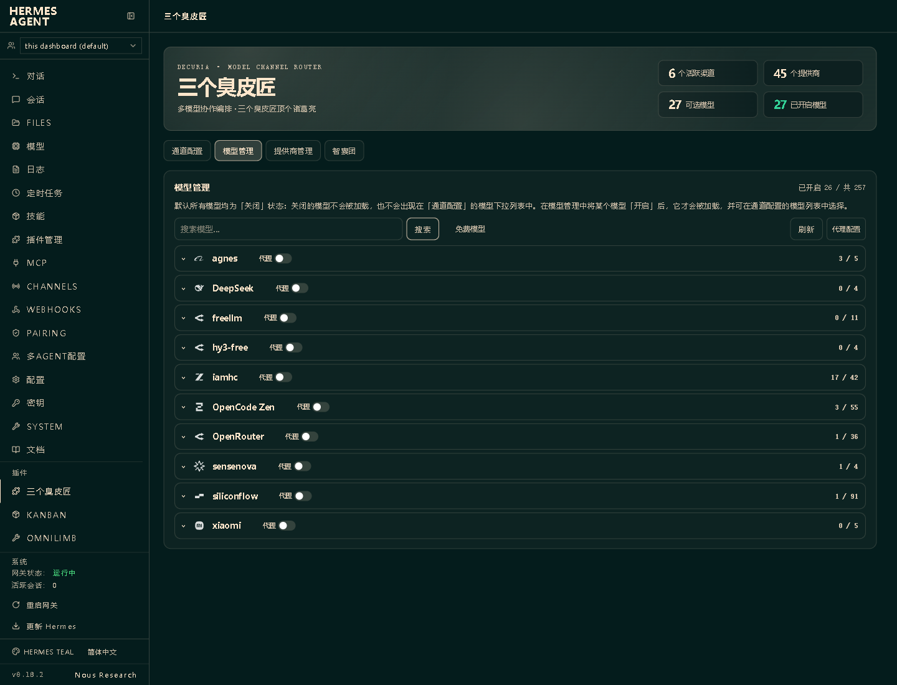
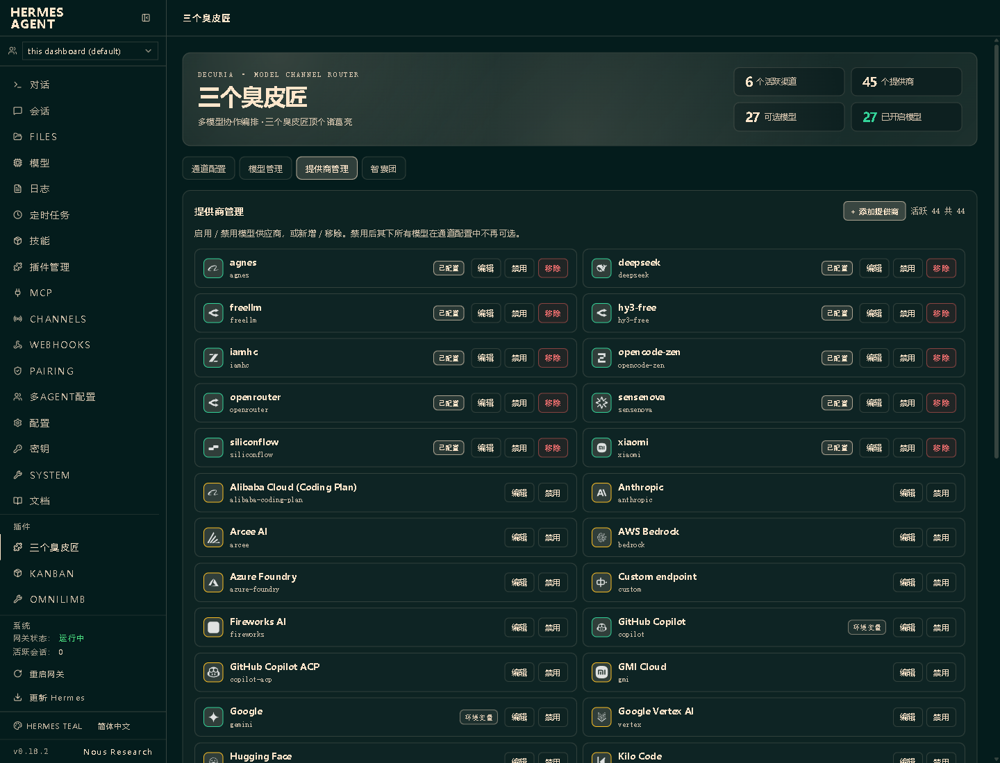

让多个 AI 互相补位、彼此质疑——把「问一个模型」升级成「开一场专家圆桌」。Decuria 是 Hermes Agent 的独立 Dashboard 插件,装上即用,不改核心一行代码。
当你接入的模型多起来,真正吃掉时间的往往不是「问 AI」,而是「管 AI」。
各渠道想各用一个模型,得反复翻 config.yaml,改一次、重启一次。
Provider、Base URL、多个 Key 散落各处,新增模型还要手动核对。
模型越堆越长,真正常用的那几个反而要翻半天。
再强的模型也有盲区、偏见和幻觉,关键决策却只听它一家。
一次配置、清晰可见、按需协作、渠道直达。
拖拽编排专家席与指挥席,最多 8 位专家并行作答,指挥模型综合共识、分歧与建议。
全局默认、各渠道、图片/视觉/视频候补,模型-Provider-Key 三级联动,批量保存。
按 Provider 分组、可搜索、可只看免费模型。新模型默认关闭,列表永远清爽。
新增/编辑任意 OpenAI 兼容 Provider,支持自定义 Base URL、多 Key、按 Provider 单独开关代理。
来自真实 Dashboard 的截图。




专家并行独立分析,指挥模型读取各方意见并输出最终结论。支持单轮会商与 2–5 轮辩证,可开启高共识提前结束。
每位专家从不同视角独立作答。
后续轮次看到上一轮观点,继续质疑修正。
指挥综合共识与分歧,给出可执行结论。
作为 pip 包安装,或作为目录插件放入 Hermes 主目录。
# 作为 pip 包 pip install decuria && hermes plugins enable decuria # 或作为目录插件 git clone https://github.com/seanyang1983/decuria.git ~/.hermes/plugins/decuria && hermes plugins enable decuria
重启 Gateway 后打开 Dashboard,从侧栏进入「三个臭皮匠」。
普通响应只返回不可逆预览,明文仅在已认证的编辑操作中回填,且禁止缓存。
校验 URL、目标地址与每次重定向,认证请求禁止跨来源;解码与下载均有体积上限。
配置与状态采用锁、临时文件、fsync 与原子替换。
渠道触发复用 Hermes 授权;运行时数据按 profile 隔离,不污染插件源码目录。